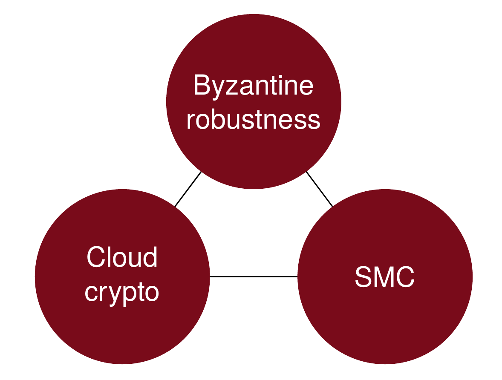
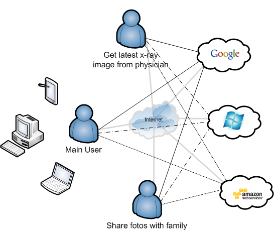
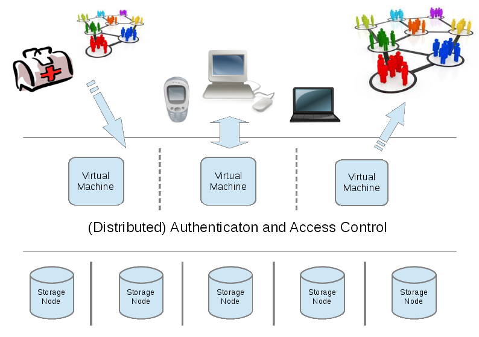

Archistar is a research project funded by the Austrian Federal Ministry for Transport, Innovation and Technology. It is dedicated to the development of a secure distributed storage architecture for trustworthy cloud usage. The Archistar framework combines Byzantine fault tolerance with secure multi-party computation and tools from cloud cryptography into a novel system architecture.

An open-source software prototype is provided, which is capable of connecting multiple cloud resources. This type of configuration is often called multi-cloud paradigm or cloud-of-clouds.The primary goal of Archistar is to guarantee the privacy and integrity of stored data by application of strong cryptography, especially secret sharing. Single storage nodes in the system shall get no information about data they are holding, except some meta information, and must not be able to modify it without being detected. Moreover, even colluding minorities of storage nodes must not be capable to recover or modify the plaintext.
Byzantine robustness is the strongest notion in fault tolerant computing and covers the development of systems which can cope with arbitrary failures, whether they are passive or active. The Archistar system shall survive arbitrary malicious attacks of a predefined minority of system nodes, hence, it shall be robust against so called active insider attacks and not only work in the honest but curious adversary model.
The basic idea of a distributed storage system shall also give rise to increased availability. If the system is immune against arbitrary failures in subsets of nodes it is automatically robust against outages of single providers. In fact, availability as considered typically in the security context is a subset of Byzantine robustness and already contained in the liveness guarantees of Byzantine protocols.
The rapid development and spread of cloud computing naturally leads to a lack of standardization and homogenization of interfaces. Thus, choosing the right provider is currently of major concern when going into the cloud. Because the architecture of Archistar comprises a provider agnostic layer it additionally removes the vendor lock-in and thus tremendously alleviates provider selection and migration. Moreover, the core software and protocols will be open source and shall serve as vendor independent interface.
Many different scenarios can be covered by an Archistar like configuration. The main idea is to provide a secure and robust storage solution in outsourcing scenarios. If private data is put on external infrastructure outside of the own security perimeter, extreme care must be taken to keep the required security properties. Although, a special contractual basis can help to force trustworthiness in providers, the client is still ultimately responsible for his data.
In an Archistar setup security is guaranteed by cryptographic means and the client can convincingly prove his effort in data protection. Moreover, also the provider has perfect arguments to denial knowledge of the data he is storing and can propose relaxed service level agreements with cheaper pay plans. One can think of an Archistar configuration like a secure cloud-RAID configuration with more additional features. The system shall support multiple users and additionally multimodal encryption, hence, different data is distributed with different algorithms dependent on the required properties.
Because secure data storage should be of paramount interest even for end users, we selected the use case personal digital safe for demonstration of the project prototype. However, the software core will be independent of this special scenario and could be used in many other situation. The overall configuration is shown in the following figure.

Please note, this is a research project and the developed software is currently not ready for poduction usage.
Privacy and integrity will be guaranteed by the use of secret sharing techniques when distributing information. In the Archistar prototype we integrate various secret sharing techniques into the byzantine layer to add privacy and integrity for stored data. The system will support secret sharing and robust secret sharing variants, which are giving information theoretical privacy guarantees. For efficiency reasons Archistar will also support computational secure secret sharing, which are not information theoretical secure, but have less data overhead than perfect secret sharing. They are more like a a secure RAID 6 systems over multiple clouds. However, the use of secret sharing in contrast to general symmetric encryption greatly simplifies key management and paves the way for multimodal encryption.
Extending the storage backend with active components to run application logic is a major difference to currently existing multi-cloud storage solutions. Active cloud elements are required to run BFT logic and protocols but can be also used to further enhance system capabilities. In the case of Archistar we plan to integrate two methods from the area of cloud cryptography, namely, searchable encryption and remote data checking.
The use of searchable encryption allows Archistar clients to offload index searches without sacrificing privacy. The nodes will run encrypted search queries on encrypted index files for the clients. Thus, ideally they process user queries without learning information about the data they are holding.
Built-in remote data checking capabilities will help to run consistency checks on the stored data without downloading them to the client. Ideally regular testing is done by an external security monitor process which does not necessarily need access to the data itself and therefore could run in an untrusted environment.
To our best knowledge, the Archistar prototype is the first open source platform which will demonstrate the feasibility and benefits of combining all these techniques. Moreover, it should facilitate further research for increased use of cryptography in cloud settings to relax the trust level of providers.
A rough sketch of the architecture in the figure below shows three main layers.

Hanser, C. and Slamanig, D. (2013). Efficient Simultaneous Privately and Publicly Verifiable Robust Provable Data Possession from Elliptic Curves. In 10th International Conference on Security and Cryptography (SECRYPT 2013), Reykjavik, Iceland, 29-31 July 2013. Note: This is the full version which is available as Cryptology ePrint Archive Report 2013/392 (pp. 15–26).
Slamanig, D. and Hanser, C. (2012). On Cloud Storage and the Cloud of Clouds Approach. In ICITST-2012 (pp. 649–655). IEEE Press.
Preliminary results of Archistar are Open Source and available on GitHub.
Archistar Repository